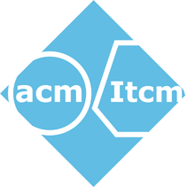
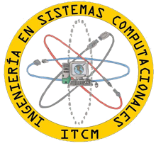

El ITCM celebrará por 6ta ocasión el Festival Lationamericano de Instalación de Software Libre el dia 24 de abril del 2015
El registro ya esta abierto. ¡Puedes registrarte aquí!, este año te damos la opción de solicitar un diploma impreso, aunque recuerda que este tendrá un costo de $10.00
Al registrarte en el evento nos ayudas a llevar una estadistica de la asistencia al evento, así como derecho a diferentes sorpresas que suele haber durante el evento.
El Festival Latinoamericano de Instalación de Software Libre (FLISoL), es el mayor evento de difusión del Software Libre que se realiza desde el año 2005 en diferentes países de toda latinoamerica de manera simultánea. En el año 2012 participaron más de 290 ciudades en 20 países de Latinoamérica.
Es una oportunidad para todas aquellas personas interesadas en conocer más acerca del software libre. Participando es posible entrar en contacto con el mundo de la tecnología, la cultura del Software Libre, conocer a otros usuarios, resolver dudas e interrogantes, intercambiar opiniones y experiencias; asistir a charlas y otras actividades programadas.
El evento se realizará en el Instituto Tecnológico de Ciudad Madero.
La dirección es:
Av. 1o. de Mayo esq. Sor Juana Inés de la Cruz s/n Col. Los Mangos C.P.89440 Cd. Madero Tamaulipas, México
Si no sabes como llegar, enfrente de la escuela pasan los autobuses y automóviles de ruta Aguila Madero, Madero Blanco Palmas y Madero Echeverría.
Conmutador: 01 (833) 357-48-20
El evento se realizará en el Gran Salón T2.
INFORMACIÓN PRÓXIMAMENTE.
INFORMACIÓN PRÓXIMAMENTE.
Si deseas instalar un sistema operativo libre, puedes llevar tu computadora y/ó portatil, ¡nosotros te ayudamos a realizar la instalación! El fin de semana estaremos publicando la información necesaria para poder participar en esta actividad
Los principales requisitos:
Como comentarios:
Hay varias cosas que se deben tener en cuenta. Las recomendaciones más habituales son tenerla desfragmentada y tener un respaldo de información. Pero hay cosas que aun no dicen. Para los que no están muy familiarizados con el funcionamiento interno de su computadora, deben saber que un disco duro no puede tener más de 4 particiones primarias. Por lo general los discos duros de una computadora de escritorio solo tienen 1 o 2 (Disco C y D comúnmente). Las laptop son las que representan una "dificultad". Muchas veces las laptops tienen más de 2 particiones primarias (las HP tienen las cuatro, una llamada HPTools, uno de recuperación, otro del SO y la última no recuerdo). ¿Por qué menciono esto? Si su computadora ya tiene las 4 particiones lógicas ocupadas, no será posible instalar un SO libre el día del festival, una partición necesita ser borrada, y esto lleva a perder la información que esta contenga. ¿Cómo saber cuántas particiones tienen mis discos duros? En W7 pueden darle clic a Inicio > Clic derecho en Equipo > Administrar. Ahí seleccionan Administración de discos. Abajo viene Disco 0. Y se ven algunas divisiones. Cada división representa una partición. En dado caso de que tengan más de 4, investiguen para que usan cada una. Y la que no sirva anotenla para que ustedes o algún miembro del staff la borre el día del Festival
 
Si deseas contactar a los organizadores puedes hacerlo al siguiente correo: